분류: 보고
작성: 오흥재 · 2026-09-11
근거: 지형 16종 x 모델 3 x 속도 3 · 14,400 에피소드 · 측정 규격 2
요지: foothold-v1은 기존 험지를 유지하면서 미경험 험지 gap의 성공률을 1 %에서 100 %로 올렸다
상태: 검토 중
Unitree Go2 사족보행 정책을 미경험 험지에서 평가한 결과입니다. 기준선(NVIDIA 공식 체크포인트), 중간 모델 A, 그리고 이번 배포 대상인 foothold-v1(모델 B)을 같은 조건에서 비교합니다.
진행 과정은 다음 여섯 단계입니다. 각 단계의 근거는 연결된 절에서 설명합니다.
주요 결과는 다섯 가지입니다. 모두 측정 규격 2를 적용했고, 모델과 평가 조건을 함께 적었습니다.
foothold-v1은 기존 험지 6종의 성적을 유지하거나 끌어올리면서, 미경험 험지 gap의 성공률을 (난이도 0.5 · 1.0 m/s · 100 에피소드 기준) 1 %에서 100 %로 올렸습니다. 다만 stepping_stones는 세 모델 모두 0 %이고, rails는 48 %에 머뭅니다.
아래는 그 주장의 근거입니다. 같은 지형, 같은 속도, 같은 난수에서 세 모델이 무엇을 하는지 보십시오.
gap을 고른 까닭은 기준선의 학습 지형에 구멍이 없었기 때문입니다.
NVIDIA 공식 체크포인트가 학습한 지형은 여섯 종입니다. 코드에서 확인한 설정은 계단 두 종 모두 holes=False이고 boxes도 기본값이 False입니다. 학습 지형에는 바닥이 뚫린 구간이 없습니다.
이번에는 대응 방법으로 구멍이 있는 지형 (gap)을 학습에 추가했습니다.
학습 설정 전체를 전수 감사했습니다. 팀장이 직접 돌린 기준선(2026-08-11 · AI-WS01 · resume false · 1,500 iteration · seed 42)과 임석헌 원본(0909_nvidia_gap_v3_seed42_iter900 · NAS 백업)을 YAML 키 단위로 맞대어 보았습니다(650 대 674). 기준선에만 있고 석헌 쪽에 없는 항목은 0개입니다. 2026-09-18 실측
사전학습 체크포인트는 기존 험지 6종만 배운 상태입니다. 거기서 값 17개를 바꾸고 2블록을 더했습니다. 그동안 이 절은 gap을 proportion 0.1로 더했다는 것만 적고 있었는데, 실제로 바뀐 것은 그보다 많습니다. 계획 단계에서는 실패 5종을 모두 넣는 안이었지만, 실제로 돌린 것은 gap 하나입니다.
| 묶음 | 항목 | NVIDIA 기본 | foothold-v1 |
|---|---|---|---|
| 명령 6 | lin_vel_x | (-1.0, 1.0) | (0.5, 1.5) |
| lin_vel_y | (-1.0, 1.0) | (0.0, 0.0) | |
| ang_vel_z | (-1.0, 1.0) | (0.0, 0.0) | |
| heading_command | True | False | |
| rel_heading_envs | 1.0 | 0.0 | |
| rel_standing_envs | 0.02 | 0.0 | |
| 리셋 3 | pose_range.yaw | (-3.14, 3.14) | (-0.05, 0.05) |
| pose_range.x | (-0.5, 0.5) | (-0.1, 0.1) | |
| pose_range.y | (-0.5, 0.5) | (-0.2, 0.2) | |
| 관측 1 | height_scan.func | height_scan | height_scan_with_gap |
| 커리큘럼 1 | max_init_terrain_level | 5 | 2 |
| 지형 비율 6 | pyramid_stairs 외 3종 | 0.2 | 0.18 |
| hf_pyramid_slope 외 1종 | 0.1 | 0.09 |
값이 다른 17개입니다. 더한 2블록은 forward_gap(proportion 0.1 · 접근거리 1.5 · 슬래브 두께 1.0)과 fell_below_terrain 종료항(상대높이 -3.0)입니다. 보상 11항 · 물리 · PhysX · 액추에이터 · episode_length_s 20 · num_envs 4096 · seed 42는 하나도 안 바뀌었습니다.
먼저 학습을 100회 반복해 기존 험지의 성공률이 유지되는지 확인했고, 그 뒤 1,500 iteration으로 두 차례 돌렸습니다.
| 모델 | 학습한 틈 폭 | iteration | gap 난이도 0.5 | gap 난이도 1.0 |
|---|---|---|---|---|
| 기준선 NVIDIA | 없음 | 1,500 | 1 % | 0 % |
| A | 0.05 ~ 0.20 m | 1,500 | 28 % | 0 % |
| B = foothold-v1 | 0.15 ~ 0.40 m | 1,500 | 100 % | 100 % |
gap의 종합 성공률 · 명령 속도 1.0 m/s · 조건마다 100 에피소드 · 규격 2.
왜 범위를 바꿨나. 평가 하네스에 설정된 틈 폭 범위는 gap_width_range=(0.15, 0.40)이고, 기준 평가 조건인 난이도 0.5에서 실제 틈은 0.275 m입니다. A가 학습한 최대 틈 폭은 0.20 m이므로 기준 평가의 틈 폭은 A의 학습 범위 밖입니다. B는 학습 범위를 평가 범위와 같게 두었습니다. 그 한 줄 말고 나머지 학습 설정은 A와 완전히 같습니다.
| 이름 | 무엇인가 | 학습한 틈 폭 | 출처 |
|---|---|---|---|
| 기준선 NVIDIA | Isaac Lab 공식 Go2 험지 체크포인트 | 없음 | .pretrained_checkpoints |
| A | 기존 험지 6종 재학습 · 틈 학습 추가 | 0.05 ~ 0.20 m | model_1500.pt |
| foothold-v1 | 틈 폭을 넓혀 재학습 | 0.15 ~ 0.40 m | models/foothold-v1.pt |
A와 B의 학습한 틈 폭은 팀장 확인이 근거입니다. 실행 당시 설정은 #428에서 받는 중입니다.
기준 성적표는 세 모델을 같은 평가 하네스 · 같은 난수(seed 42) · 난이도 0.5 · 명령 속도 1.0 m/s에서 비교한 것입니다. 지형마다 100 에피소드입니다. 다른 속도의 기준 평가는 05절에, 난이도별 결과는 07절에, 난이도 0.1의 속도 비교는 08절에 있습니다.
난이도 0.5, 명령 속도 1.0 m/s, 지형마다 100 에피소드에서의 성공률입니다. 생존 · 전진 · 속도추종 · 방향의 네 평가 기준을 모두 충족해야 성공으로 판정합니다.
난이도 0.5 · 명령 속도 m/s · 종합 성공률 % · 지형마다 100 에피소드.
| 지형 | 기준선 NVIDIA | A | foothold-v1 | ||||||
|---|---|---|---|---|---|---|---|---|---|
| 0.5 | 1 | 1.5 | 0.5 | 1 | 1.5 | 0.5 | 1 | 1.5 | |
| 기존 험지 6종 | |||||||||
| boxes | 76 | 34 | 0 | 98 | 100 | 98 | 99 | 100 | 100 |
| hf_pyramid_slope | 100 | 100 | 0 | 100 | 100 | 100 | 100 | 100 | 100 |
| hf_pyramid_slope_inv | 100 | 100 | 24 | 100 | 100 | 100 | 100 | 100 | 100 |
| pyramid_stairs | 10 | 100 | 81 | 99 | 100 | 100 | 100 | 100 | 100 |
| pyramid_stairs_inv | 24 | 0 | 0 | 100 | 100 | 99 | 100 | 100 | 100 |
| random_rough | 85 | 80 | 0 | 87 | 92 | 72 | 99 | 100 | 90 |
| 미경험 험지 10종 | |||||||||
| discrete_obstacles | 94 | 94 | 0 | 100 | 100 | 100 | 100 | 100 | 100 |
| floating_ring | 1 | 0 | 0 | 78 | 96 | 63 | 95 | 99 | 87 |
| gap | 0 | 1 | 0 | 0 | 28 | 72 | 90 | 100 | 68 |
| pit | 7 | 2 | 0 | 100 | 100 | 99 | 100 | 100 | 100 |
| rails | 0 | 8 | 0 | 16 | 42 | 3 | 70 | 48 | 21 |
| repeated_boxes | 100 | 100 | 1 | 100 | 100 | 100 | 100 | 100 | 100 |
| repeated_cylinders | 99 | 100 | 7 | 100 | 100 | 100 | 100 | 100 | 100 |
| star | 86 | 100 | 62 | 100 | 100 | 100 | 100 | 100 | 100 |
| stepping_stones | 0 | 0 | 0 | 0 | 0 | 0 | 0 | 0 | 0 |
| wave | 100 | 100 | 0 | 100 | 100 | 100 | 100 | 100 | 100 |
| 지형 집합 | 속도 | 기준선 | A | foothold-v1 | 기준선 대비 (%p) |
|---|---|---|---|---|---|
| 기존 험지 6종 | 0.5 | 65.8 | 97.3 | 99.7 | +33.8 |
| 기존 험지 6종 | 1 | 69.0 | 98.7 | 100.0 | +31.0 |
| 기존 험지 6종 | 1.5 | 17.5 | 94.8 | 98.3 | +80.8 |
| 미경험 험지 10종 | 0.5 | 48.7 | 69.4 | 85.5 | +36.8 |
| 미경험 험지 10종 | 1 | 50.5 | 76.6 | 84.7 | +34.2 |
| 미경험 험지 10종 | 1.5 | 7.0 | 73.7 | 77.6 | +70.6 |
각 지형 집합의 평균 종합 성공률입니다. 기존 험지 6종에서 foothold-v1은 세 속도 모두 기준선을 웃돕니다. 특히 1.5 m/s에서 기준선은 평균 17.5 %인데 foothold-v1은 98.3 %입니다.
명령 속도 1.5 m/s에서 기준선이 실패한 각 에피소드를, 충족하지 못한 평가 항목의 조합에 따라 분류했습니다. 축별 합계로는 어느 에피소드가 어느 항목을 못 채웠는지 알 수 없어, 각 에피소드의 네 항목을 모두 보고 분류했습니다.
| 지형 | 실패 에피소드 | 속도추종만 | 속도추종+1축 | 속도추종+2축 이상 | 속도추종 통과 · 다른 항목 실패 | foothold-v1 성공률 |
|---|---|---|---|---|---|---|
| hf_pyramid_slope | 100 | 100 | 0 | 0 | 0 | 100 |
| repeated_boxes | 99 | 99 | 0 | 0 | 0 | 100 |
| wave | 100 | 99 | 1 | 0 | 0 | 100 |
| boxes | 100 | 96 | 4 | 0 | 0 | 100 |
| repeated_cylinders | 93 | 93 | 0 | 0 | 0 | 100 |
| random_rough | 100 | 90 | 8 | 2 | 0 | 90 |
| hf_pyramid_slope_inv | 76 | 76 | 0 | 0 | 0 | 100 |
| discrete_obstacles | 100 | 71 | 24 | 5 | 0 | 100 |
| rails | 100 | 70 | 6 | 24 | 0 | 21 |
| star | 38 | 38 | 0 | 0 | 0 | 100 |
| pit | 100 | 34 | 21 | 45 | 0 | 100 |
| pyramid_stairs | 19 | 19 | 0 | 0 | 0 | 100 |
| gap | 100 | 5 | 0 | 95 | 0 | 68 |
| pyramid_stairs_inv | 100 | 4 | 1 | 95 | 0 | 100 |
| floating_ring | 100 | 0 | 0 | 100 | 0 | 87 |
| stepping_stones | 100 | 0 | 0 | 100 | 0 | 0 |
| 합계 | 1425 | 894 | 65 | 466 | 0 |
난이도 0.5, 지형마다 100 에피소드입니다. 실패한 1425 에피소드 가운데 에피소드 894개(63 %)는 속도추종 기준만 충족하지 못했습니다. 나머지 세 축은 통과했다는 뜻이고, 그 에피소드에서 로봇은 넘어지지 않고 통과선도 넘었습니다. 속도추종 기준은 평면 평균 오차 0.25 m/s이고 이 오차에는 전후 방향뿐 아니라 좌우 방향 오차도 들어갑니다. 그래서 이 항목의 탈락을 «명령보다 느리게 갔다»로 읽으면 안 됩니다. 잰 것은 오차가 한계를 넘었다는 점입니다.
나머지 531 에피소드는 이렇게 갈립니다. 속도추종 외에 다른 항목 하나도 충족하지 못한 에피소드가 65, 두 축 이상이 더 떨어진 에피소드가 466입니다. 속도추종 기준을 충족했지만 다른 기준 때문에 실패한 에피소드는 0입니다. 네 범주를 더하면 1425로 전체 실패 에피소드 수와 같습니다.
두 축 이상이 더 떨어진 466 에피소드는 floating_ring · stepping_stones · gap · pyramid_stairs_inv에 몰려 있고, 그 지형에서는 실제로 넘어지거나 통과선까지 못 갔습니다.
이 표를 「기준선이 고속 험지에서 무너진다」로 읽으면 과장입니다. 대부분은 생존 · 전진 · 방향을 통과하고 속도추종 축에서만 떨어집니다. 이 표만으로는 속도 부족과 좌우 오차의 몫을 가를 수 없습니다. 기준선의 실패 에피소드는 모두 속도추종 축에서도 떨어졌습니다. foothold-v1도 모든 에피소드에서 이 축을 통과하지는 않습니다. 같은 조건에서 속도추종 축을 통과한 에피소드가 1,369 / 1,600이고, stepping_stones는 0/100, rails는 24/100입니다.
이 결과는 시뮬레이션에서 얻었습니다. 실제 로봇에서도 같은 결과가 나오는지는 재보지 않았습니다(미확인).
같은 지형(wave)을 1.5 m/s 명령으로 걷는 장면입니다. 셋 다 넘어지지 않습니다. 기준선 시연의 trace를 평가 방식으로 다시 계산하면 평면 평균 오차가 기준을 벗어나 속도추종 기준을 못 채웁니다.
영상은 평가 에피소드 자체가 아닙니다. 같은 체크포인트·지형·난이도·난수로 따로 촬영한 한 에피소드이고, 성적표의 100 에피소드 중 하나를 꺼낸 것이 아닙니다. 옆의 성공률은 그 자리의 100 에피소드 집계이고, 영상은 같은 조건에서 로봇이 무엇을 하는지 보여 줍니다.
HUD의 추종 표시는 평가의 속도추종 판정과 다른 계산입니다. HUD는 그 시점까지의 전후 방향 오차 abs(vx - 명령속도)의 누적 평균을 보여 줍니다. 평가는 전후와 좌우를 합친 평면 오차를 누적합니다. 판정 한계 0.25 m/s를 사이에 두고 갈리기도 합니다. 기준선 1.5 m/s 시연 세 편의 trace를 다시 재 보면 전후 오차는 0.18~0.24로 한계 안이고 같은 표본의 평면 오차는 0.25~0.30으로 한계 밖입니다 (repeated_boxes · repeated_cylinders · wave). HUD를 보고 판정을 역산하지 마십시오.
영상은 1920 x 1080 초당 50장이고, 지형이 끝나는 자리까지만 잘랐습니다. 초당 장수는 임의값이 아니라 정책이 결정을 내리는 주기입니다 (물리 200 Hz · 4스텝에 결정 1번 · 결정 1번에 프레임 1장).
지금까지는 난이도 0.5 한 칸만 봤습니다. 그 한 칸은 「지금 어느 쪽이 낫나」는 말해 주지만 어느 난이도부터 떨어지나는 말해 주지 않습니다. 미경험 험지 10종을 난이도 0.1부터 1.0까지 열 단으로 잰 것이 아래입니다.
기준선은 난이도가 오를수록 76 %에서 37 %로 내려갑니다. foothold-v1은 90 %에서 77 %로, 열 단을 다 올려도 기준선의 가장 쉬운 칸(난이도 0.1 · 76 %)보다 높습니다. A는 그 사이입니다.
지형마다 성공률이 떨어지는 난이도가 다르고, 모델마다 그 난이도가 옮겨갑니다. 규격 2 · 1.0 m/s · 칸마다 100 에피소드 · 단위 %.
| 지형 | 모델 | 난이도 0.1 | 난이도 0.3 | 난이도 0.5 | 난이도 0.7 | 난이도 1.0 |
|---|---|---|---|---|---|---|
| gap | 기준선 | 25 | 5 | 1 | 0 | 0 |
| gap | A | 100 | 100 | 28 | 0 | 0 |
| gap | v1 | 100 | 100 | 100 | 100 | 100 |
| pit | 기준선 | 81 | 24 | 2 | 1 | 0 |
| pit | A | 100 | 100 | 100 | 100 | 0 |
| pit | v1 | 100 | 100 | 100 | 100 | 78 |
| rails | 기준선 | 92 | 36 | 8 | 0 | 0 |
| rails | A | 100 | 92 | 42 | 2 | 0 |
| rails | v1 | 100 | 97 | 48 | 1 | 0 |
| floating_ring | 기준선 | 0 | 0 | 0 | 1 | 5 |
| floating_ring | A | 0 | 31 | 96 | 100 | 100 |
| floating_ring | v1 | 1 | 81 | 99 | 100 | 100 |
| stepping_stones | 기준선 | 58 | 0 | 0 | 0 | 0 |
| stepping_stones | A | 88 | 0 | 0 | 0 | 0 |
| stepping_stones | v1 | 99 | 0 | 0 | 0 | 0 |
gap에서 A와 foothold-v1의 차이가 뚜렷합니다. 기준선은 가장 쉬운 칸에서도 25 %이고, A는 0.3까지 버티다 0.5에서 28 %로 떨어지고, v1은 난이도 1.0까지 100 %입니다. A가 학습한 최대 틈이 0.20 m이고 난이도 0.5의 틈이 0.275 m 라 A는 평가의 틈 폭을 학습에서 본 적이 없습니다.
floating_ring은 거꾸로 갑니다. 이 지형은 난이도 설정값이 커질수록 고리가 낮아집니다. 그래서 설정값이 오른 것을 «더 어려워졌다»로 읽을 수 없습니다. 그것이 성공률 상승의 원인인지까지는 확인하지 않았습니다.
난이도 0.5 칸에서 이 곡선과 앞의 성적표는 같은 값입니다 (기준선 50.5 % · A 76.6 % · foothold-v1 84.7 %). 난이도 0.5 · 1.0 m/s에서 미경험 10종의 모델별 평균이 기준 성적표와 일치한다는 뜻입니다. 두 자료가 같은 것을 재고 있다는 뜻입니다.
난이도 0.1에서 명령 속도 0.5 · 1.0 · 1.5 m/s를 비교했습니다. 미경험 10종의 평균 종합 성공률입니다.
| 모델 | 0.5 m/s | 1.0 m/s | 1.5 m/s |
|---|---|---|---|
| 기준선 NVIDIA | 65 | 76 | 7 |
| A | 89 | 89 | 87 |
| B = foothold-v1 | 82 | 90 | 84 |
둘이 보입니다. 하나 · 명령 속도를 낮춘다고 종합 성공률이 올라가지는 않습니다. 기준선과 foothold-v1은 0.5 m/s가 1.0 m/s보다 낮습니다 (65.0 대 75.6 · 82.1 대 90.0). 다만 A는 세 속도가 거의 같습니다 (89.3 · 88.8 · 87.0) 라 이 경향이 모든 정책에 있는 것은 아닙니다.
둘 · 1.5 m/s에서 기준선과 foothold-v1의 차이가 큽니다. 난이도 0.1에서 기준선의 종합 성공률은 1.0 m/s의 76 %에서 1.5 m/s의 7 %로 떨어지는데, foothold-v1은 84 %를 지킵니다. 왜 그런지는 이 자료로 못 가릅니다.
생존 · 전진 · 속도추종 · 방향의 네 기준을 모두 충족해야 성공입니다. 그런데 장애물을 비켜 가도 그 조건은 채워집니다. 그래서 이번 에피소드에 몸통 아래 광선이 어느 높이 폭을 지났는가를 재는 열 셋을 더했습니다.
| 지형 | 성공률 | 스캔 전체 기복 (m) | 중앙 광선 기복 (m) | 참여도 평균 | 중앙값 | 10~90분위 | 관측 |
|---|---|---|---|---|---|---|---|
| star | 100 | 0.105 | 0.017 | 0.16 | 0.00 | 0.00 ~ 1.00 | 성공률 높음 · 중앙 광선 기복 작음 |
| discrete_obstacles | 100 | 0.180 | 0.055 | 0.31 | 0.32 | 0.24 ~ 0.32 | 성공률 높음 · 중앙 광선 기복 작음 |
| wave | 100 | 0.131 | 0.080 | 0.61 | 0.59 | 0.56 ~ 0.69 | 중간 |
| stepping_stones | 0 | 1.108 | 0.860 | 0.78 | 0.90 | 0.35 ~ 0.91 | 중간 |
| repeated_boxes | 100 | 0.081 | 0.064 | 0.80 | 0.77 | 0.72 ~ 0.91 | 중앙 광선 기복 큼 · 성공률 높음 |
| repeated_cylinders | 100 | 0.067 | 0.062 | 0.92 | 0.91 | 0.89 ~ 0.99 | 중앙 광선 기복 큼 · 성공률 높음 |
| boxes | 100 | 0.244 | 0.238 | 0.97 | 0.97 | 0.97 ~ 1.00 | 중앙 광선 기복 큼 · 성공률 높음 |
| random_rough | 100 | 0.100 | 0.100 | 1.00 | 1.00 | 0.99 ~ 1.00 | 중앙 광선 기복 큼 · 성공률 높음 |
| hf_pyramid_slope | 100 | 0.400 | 0.400 | 1.00 | 1.00 | 1.00 ~ 1.00 | 중앙 광선 기복 큼 · 성공률 높음 |
| hf_pyramid_slope_inv | 100 | 0.400 | 0.400 | 1.00 | 1.00 | 1.00 ~ 1.00 | 중앙 광선 기복 큼 · 성공률 높음 |
| pyramid_stairs | 100 | 0.980 | 0.980 | 1.00 | 1.00 | 1.00 ~ 1.00 | 중앙 광선 기복 큼 · 성공률 높음 |
| pyramid_stairs_inv | 100 | 0.980 | 0.980 | 1.00 | 1.00 | 1.00 ~ 1.00 | 중앙 광선 기복 큼 · 성공률 높음 |
| floating_ring | 99 | 0.225 | 0.225 | 1.00 | 1.00 | 1.00 ~ 1.00 | 중앙 광선 기복 큼 · 성공률 높음 |
| pit | 100 | 0.200 | 0.200 | 1.00 | 1.00 | 1.00 ~ 1.00 | 중앙 광선 기복 큼 · 성공률 높음 |
| rails | 48 | 0.115 | 0.115 | 1.00 | 1.00 | 1.00 ~ 1.00 | 중앙 광선 기복 큼 · 성공률 낮음 |
star는 성공률 100 %인데 참여도 중앙값이 표시 자릿수에서 0.00입니다. 시연 한 편에서 막대 사이를 지나는 경로를 봤고, 평가 100 에피소드 전체의 경로는 확인하지 않았습니다. 난이도 0.5에서 star의 막대 높이는 0.105 m인데, 몸통 아래 광선이 지나간 높이 폭은 평균 0.017 m입니다.
평균보다 분포가 분명합니다. 참여도 중앙값이 0.00이고 10~90 분위가 0.00 ~ 1.00입니다. 중앙값이 표시 자릿수에서 0.00이고, 비율이 정확히 1인 에피소드는 16개였습니다. 평균은 0.16입니다. 중앙값과 그 개수만으로 나머지가 어떻게 흩어졌는지는 말할 수 없습니다.
Isaac의 star 지형은 막대가 중심에서 바깥으로 뻗습니다. 막대 사이를 따라 바깥쪽으로 걸으면 막대를 가로지르지 않는 경로가 가능합니다. 다만 그 경로를 실제로 확인한 것은 영상 한 에피소드뿐입니다(미확인).
반대로 rails와 stepping_stones는 참여도 중앙값이 1.00와 0.90인데 성공률이 48 %와 0 %입니다. 참여도가 높은데 성공률이 낮은 조건입니다. 이 비율만으로 실패 원인을 말할 수는 없습니다.
참여도가 높다고 실패하는 것도, 낮다고 성공하는 것도 아닙니다. 아래 셋은 난이도 0.5 · 1.0 m/s에서 따로 촬영한 시연 한 에피소드씩이고, 옆의 수치는 같은 조건 100 에피소드의 집계입니다.
참여도는 발이 닿았는지를 재지 않습니다. 몸통 아래 중앙 광선이 지난 높이 폭을, 스캔 전체가 본 높이 폭으로 나눈 값입니다. 어느 길로 우회했는지, 장애물을 끝까지 갔는지는 이 비율만으로 알 수 없습니다.
gap은 이 조건에서 잴 수 없습니다. 난이도 0.5 · 1.0 m/s · foothold-v1의 100 에피소드 모두 스캔 전체 기복이 0.02 m에 못 미쳐 비어 있습니다. 다른 모델·속도에서는 유효값이 몇 에피소드 잡히기도 하므로 「gap은 언제나 못 잰다」로 넓히지 마십시오. 네 축은 평가 기준을 채웠는지를 보여 줍니다. 발이 실제로 어디에 닿았는지와 어떤 경로로 지났는지는 따로 봐야 합니다.
성적이 갈리는 까닭을 보려면 무엇에 상을 주고 무엇에 벌을 주었는지를 봐야 합니다. 아래는 학습 실행이 저장한 params/env.yaml에서 그대로 읽은 것입니다.

lin_vel_z_l2의 가중치가 -2.00으로, 몸통이 위아래로 움직이는 데 벌점을 줍니다. 절댓값 2.00은 속도추종 보상의 절댓값 1.50보다 큽니다. 다만 항마다 계산식과 값의 범위가 달라 가중치의 크기만으로 실제 기여를 견줄 수는 없습니다. 틈이나 턱을 넘으려면 몸이 위아래로 움직여야 하니 이 항이 그 동작을 누르는지 확인할 항목이지만, 그렇다고 확인한 것은 아닙니다. 미확인
stepping_stones에서 세 모델이 어떻게 실패하는지입니다. 2차는 이 결과를 기준으로 개선을 주장하게 됩니다.
git pull origin main
pip install av # Isaac이 도는 파이썬에 한 번만
# maindata-v1 평가 자료 (성적표와 그 원자료)
# 07 · 08절의 난이도·속도 표는 20260911-v3-fixedscan이고
# 아래 명령으로는 안 나옵니다. 그 자료의 재현은 평가 기준 문서를 보십시오.
python sim/eval/run_matrix.py \
--model baseline=<pt> --model A=<pt> \
--model foothold-v1=models/foothold-v1.pt \
--out_dir sim/eval/results/maindata-v1
# 근거 영상 전부
python sim/eval/render_gallery.py \
--checkpoint models/foothold-v1.pt \
--raw_csv sim/eval/results/maindata-v1
이 보고서에 실린 것은 주장마다 한두 장씩 고른 것입니다. 지형 16종 x 속도 3종 48컷과 모델 대조 96컷, 모두 144컷이 gallery-v1에 있습니다. 평가 칸 144개 가운데 0개는 성적만 있고 영상이 없습니다. 보고서 1차와 gallery-v1이 한 세트입니다.
영상은 전진 5.0 m에서 잘렸습니다. 난이도 0.5에서 장애물 구간이 가장 멀리 가는 지형도 4.00 m에서 끝나고 그 뒤는 평평한 테두리라 볼 것이 없기 때문입니다. 지형마다 구간이 달라 어떤 영상은 앞쪽에서 이미 볼 것이 끝납니다. 넘어져서 그만큼 못 간 에피소드는 그대로 다 남아 있습니다. 배속 단추는 재생기의 playbackRate를 바꿉니다. 다만 느리게 틀어도 새 프레임이 생기지는 않아, 원본 초당 50장이 0.25배에서는 12.5장으로 보입니다.
있어야 할 칸은 sim/eval/matrix.py가 선언합니다. 한 칸이라도 비면 실행기가 0이 아닌 코드로 끝나고, 보고서 생성기도 거부합니다. 측정 규격과 판정 정의는 평가 기준 문서 입니다 (저장소는 docs/research/20260911-eval-protocol-v2.md).
여기서 «칸»은 한 번의 평가 실행입니다. 07절의 «칸»(모델 하나 x 지형 하나 x 난이도 하나 x 속도 하나)과 단위가 다릅니다.
| 무리 | 칸 | 선언한 에피소드 | 있는 에피소드 |
|---|---|---|---|
| 성적표 (난이도 0.5) | 18 | 14,400 | 14,400 |
| 난이도 곡선 | 36 | 28,800 | 28,800 |
| 합 | 54 | 43,200 | 43,200 |
선언한 54칸이 모두 찼습니다. 이 표는 maindata-v1 한 자료의 회계입니다. 본문의 성적표는 난이도 0.5의 14,400 에피소드가 분모이고, 이 자료 전체는 43,200 에피소드입니다. 07절의 난이도 표와 곡선은 다른 자료(20260911-v3-fixedscan · 954칸)이니 더하지 마십시오.